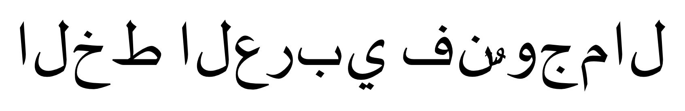
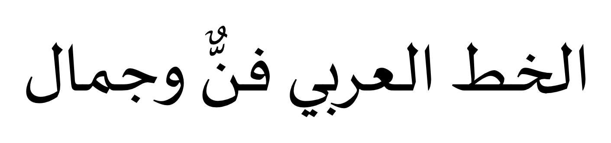
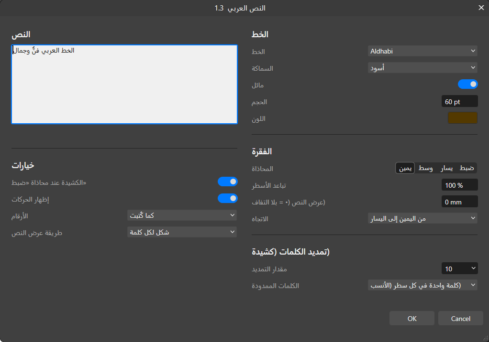
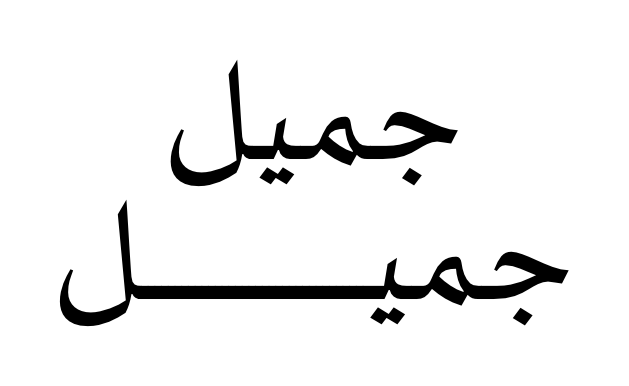
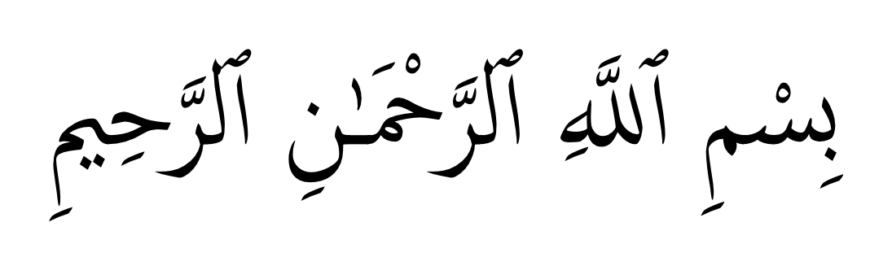
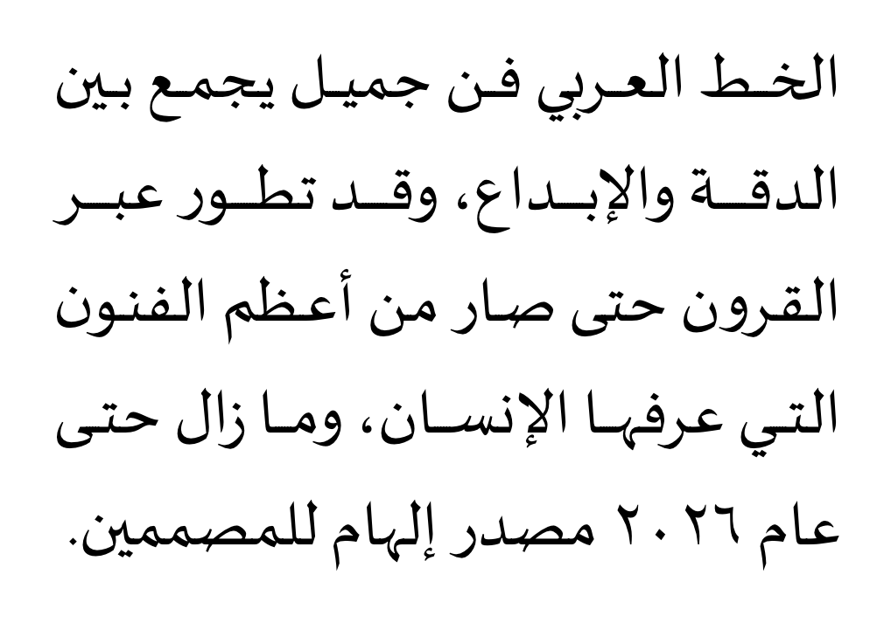

حل مشكلة الكتابة بالعربي في أفينيتي (Affinity 3)
أداة مجانية مفتوحة المصدر تعمل داخل Affinity من Canva، فتكتب العربية بحروف متصلة واتجاه صحيح، مع الحركات والكشيدة وضبط الفقرات، وتحوّلها إلى أشكال فيكتور قابلة للتعديل لاحقاً.


لماذا تظهر العربية مقطّعة ومقلوبة في Affinity؟
محرك النصوص في Affinity Designer وPhoto وPublisher، وفي Affinity 3 الموحّد، لا يدعم تشكيل الحروف: فللحرف العربي حتى أربعة أشكال حسب موضعه، وAffinity يعرض الشكل المنفصل دائماً. ولا يدعم أيضاً الاتجاه من اليمين لليسار، فيرصّ الحروف بالعكس. لذلك لا ينفع تغيير الخط ولا لصق النص من برنامج آخر. هذه الأداة تضيف إلى Affinity محرّك التشكيل الحقيقي HarfBuzz المستخدم في المتصفحات وأندرويد، وخوارزمية الاتجاه الرسمية Unicode Bidi.
المزايا

- تكتب بأي خط عربي مثبّت على جهازك، مع ربط الحروف و«لا» و«الله» كما صُممت.
- معاينة مباشرة على الصفحة أثناء الكتابة.
- الخط والسماكة والمائل، والحجم، واللون.
- المحاذاة: يمين ووسط ويسار وضبط، والضبط بالكشيدة كما في المطابع العربية.
- تباعد الأسطر، وعرض محدد تلتفّ عنده الأسطر.
- تمديد الكلمات بالكشيدة في كل الكلمات أو في كلمة واحدة في كل سطر.
- إظهار الحركات أو إخفاؤها، وأرقام عربية أو إنجليزية، ومزج العربية بالإنجليزية.
- شكل واحد، أو شكل لكل سطر أو لكل كلمة، أو الحركات في شكل منفصل.
- قابل للتعديل لاحقاً مع الاحتفاظ بالتدرّج والحد والظل والتأثيرات.



التثبيت في ثلاث خطوات
- حمّل ملف
ArabicText-for-Affinityمن صفحة الإصدارات وفكّ ضغطه. - شغّل
install.cmdبنقرة مزدوجة. لا يحتاج صلاحيات المدير. - في Affinity: فعّل البرامج النصية من Settings ← Scripting. ثم افتح لوحة Scripts Library، واضغط زر القائمة ☰ بجانب Default، ثم اختر Import Script… واختر ملف
.afscript.
المتطلبات: Windows 10 أو 11، وAffinity 3 من Canva.
أسئلة شائعة
هل تعمل مع Affinity Designer 2؟
لا، تحتاج البرامج النصية الموجودة في Affinity 3 فقط.
إذا أرسلت الملف لشخص آخر، هل سيراه صحيحاً؟
نعم. النص أشكال فيكتور، فيظهر صحيحاً على أي جهاز وفي PDF وSVG وPNG.
هل يبقى النص قابلاً للتعديل؟
نعم. حدّد الشكل وشغّل الأداة، فتفتح بنصك وإعداداتك.
هل ترسل الأداة بيانات إلى الإنترنت؟
لا، كل شيء يعمل على جهازك.
Arabic text in Affinity: the fix
Affinity Designer, Photo, Publisher and Affinity 3 by Canva cannot write Arabic: letters come out disconnected and reversed, because the text engine has no Arabic shaping and no right-to-left (bidi) support. Arabic Text for Affinity is a free, open-source script that adds HarfBuzz shaping and Unicode bidi inside Affinity 3. It has a live-preview dialog for font, size, colour, alignment, kashida justification, word stretching, harakat, digits and wrapping, and outputs editable vector shapes.